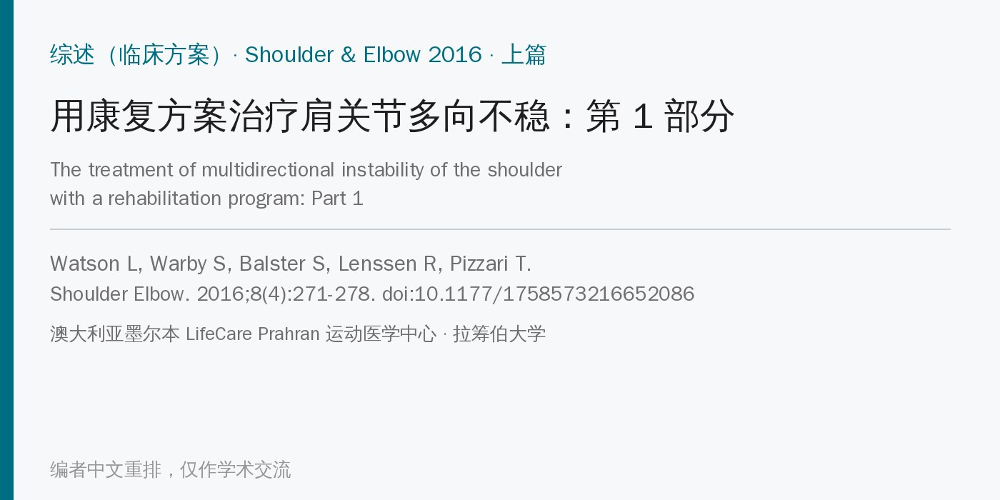
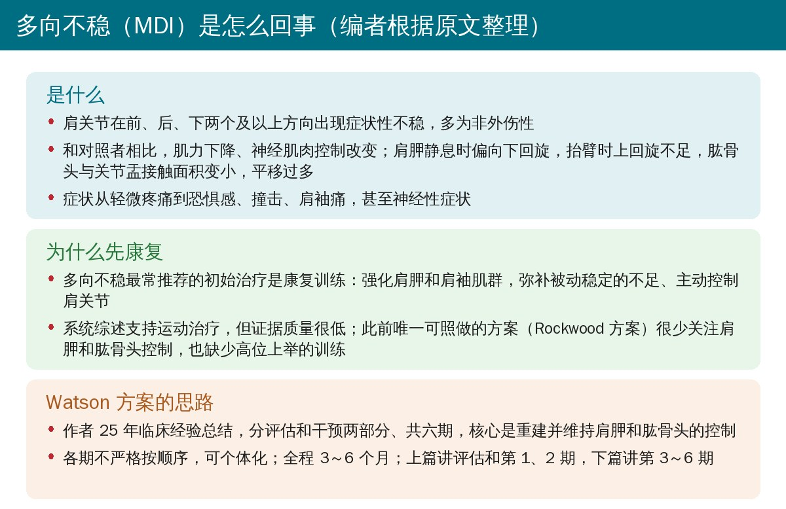
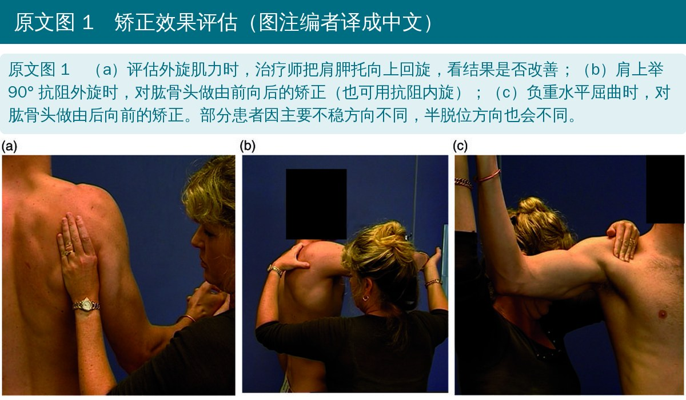
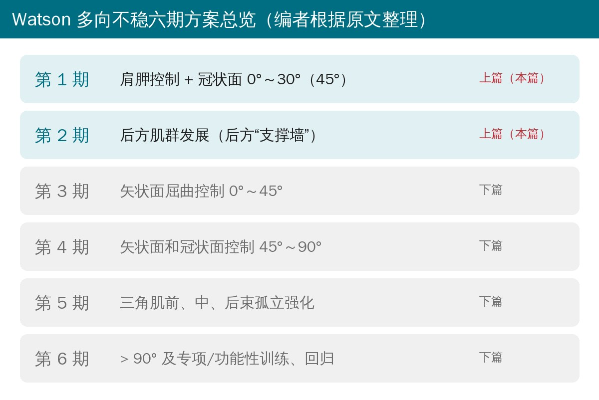
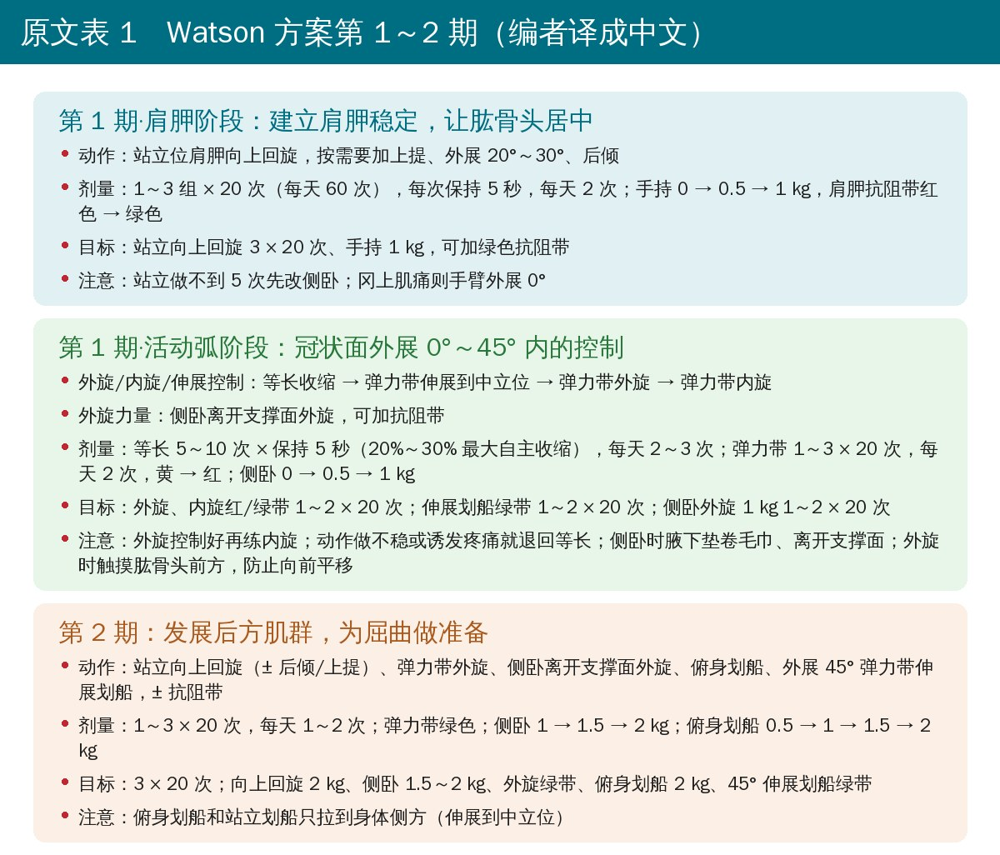
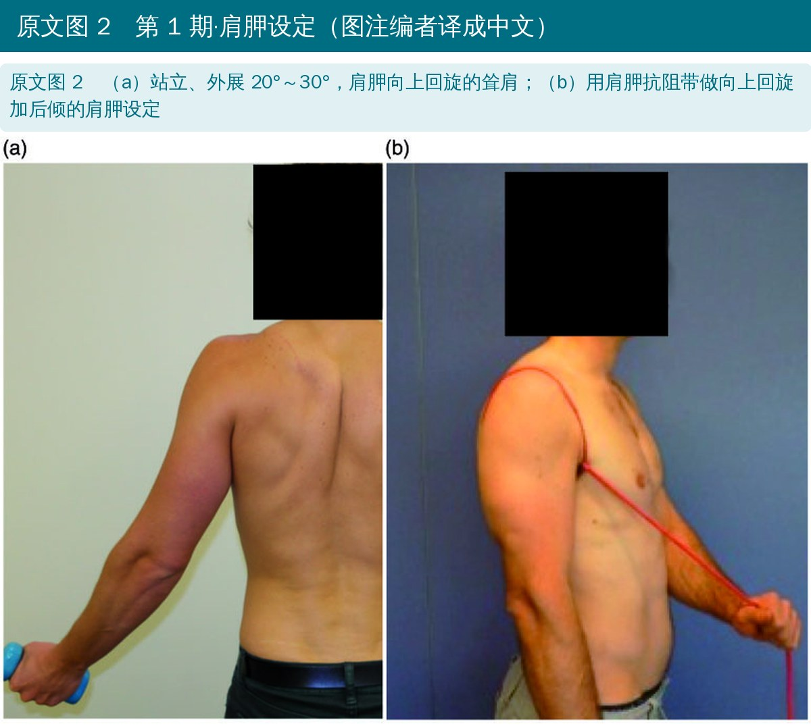
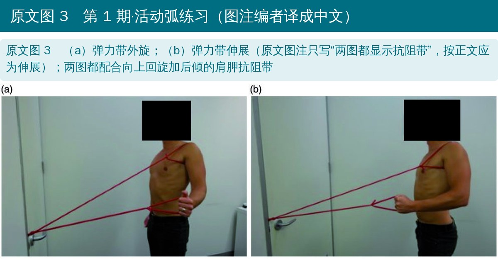
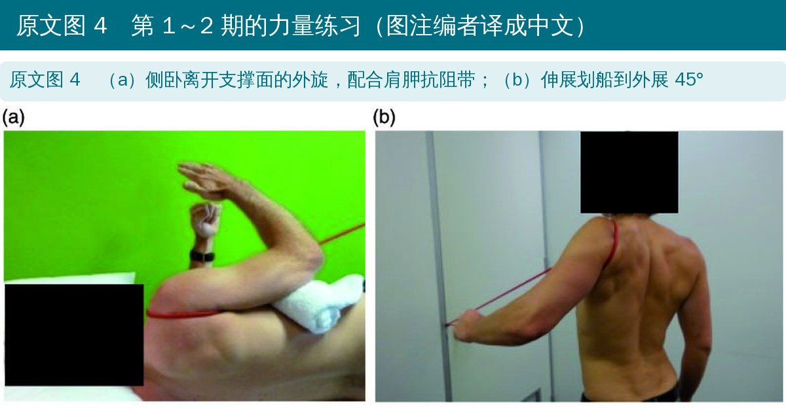
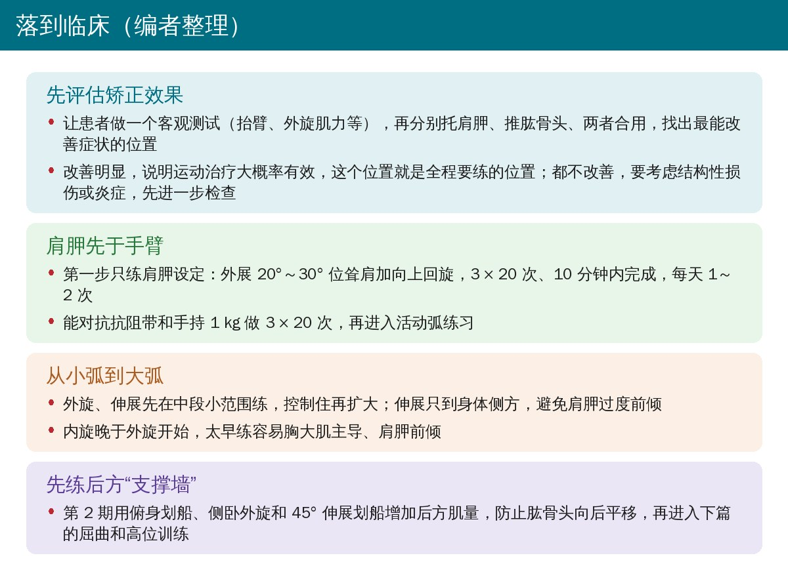

🔖原文信息（编者中文重排）
本文是上篇：讲 Watson 多向不稳康复方案的评估方法和第 1、2 期。第 3～6 期（屈曲、90° 以上、三角肌和专项训练）以及剂量、负荷和进阶规则见下篇，下篇会在本号随后推送。
📚 文献信息
▪ Watson L, Warby S, Balster S, Lenssen R, Pizzari T. The treatment of multidirectional instability of the shoulder with a rehabilitation program: Part 1. Shoulder Elbow. 2016;8(4):271-278. doi:10.1177/1758573216652086
▪ 中文题目：用康复方案治疗肩关节多向不稳：第 1 部分
▪ 作者来自澳大利亚墨尔本 LifeCare Prahran 运动医学中心和拉筹伯大学
▪ 文章类型：综述（临床方案介绍），方案的随机对照试验注册号 ACTRN12613001240730
• 肩关节多向不稳（MDI）患者肌力下降、神经肌肉控制异常，肩胛静息时偏向下回旋、抬臂时上回旋不足，肱骨头和关节盂的接触面积变小、平移过多；症状从轻微疼痛到恐惧感、撞击和肩袖痛不等
• MDI 最常推荐的初始治疗是康复训练：强化肩胛和肩袖肌群，弥补被动稳定的不足；系统综述支持运动治疗，但证据质量很低
• 此前只有 Rockwood 和 Burkhead 的方案写得足够详细、可以照做，但它很少关注肩胛和肱骨头控制，也没有高位上举的训练
• 本文目的：介绍作者 25 年临床经验总结的六期 Watson MDI 方案，上篇讲评估和第 1、2 期

🔖编者根据原文整理
• 这是一篇临床方案介绍：作者结合多年临床经验、已发表的 MDI 康复方案和 MDI 常见的生物力学缺陷，提出六期方案，并附详细流程图（原文在线补充材料）
• 方案分评估和干预两部分；各期不严格按顺序，允许个体化开处方；全程 3～6 个月
• 方案在发表时正与 Rockwood 方案做随机对照试验，初步数据来自作者的学术会议报告和博士论文
• 矫正效果是方案的关键：既判断患者适不适合运动治疗，也决定全程要练的肩胛和肱骨头位置
• 步骤：患者先做一个客观测试（活动度、肌力等），治疗师记下肩胛运动障碍、出现症状的角度、活动度或肌力不足、肱骨头半脱位；再依次托肩胛、推肱骨头、两者合用，复测并记录疼痛、活动度、肌力、恐惧感和半脱位的变化；改善最多的位置就是要练的位置
• 肩胛矫正：从腋下托住肩胛，在抬臂或等长外旋时评估；MDI 最常见的矫正方向是轻度向上回旋（约 10°）、上提 1～2 cm 和后倾约 5°，或几者组合
• 肱骨头矫正：对肱骨头施加由前向后或由后向前的轻柔压力；向前平移用不同外展角度下的主动或等长外旋来评估，向后平移用屈曲或水平屈曲来评估
• 所有测试都不改善，要考虑结构性损伤或炎症，先进一步检查或药物处理，再开始康复

🔖原文图 1（图注编者译成中文）

🔖编者根据原文整理
• 肩胛设定阶段（整个方案的基础，必须先掌握）：站立、手臂外展 20°～30° 做肩胛向上回旋的耸肩，这个角度比手臂垂在体侧更能激活向上回旋肌群；按需要加上提或后倾
• 剂量：以“募集”为目标，最好在 10 分钟内完成 3 组 × 20 次，每天 1～2 次；能完成后套上肩胛抗阻带（绕肩胛的 TheraBand，可按固定点不同分别抵抗向上回旋、上提或后倾），再手持 0.5 kg、1 kg
• 肩胛向上回旋或颈深屈肌太弱、站立做不到 5 次的患者，先侧卧做
• 进入活动弧阶段的标准：对抗肩胛抗阻带、手持 1 kg 完成 3 组 × 20 次
• 活动弧阶段：在保持肩胛控制的同时，练冠状面外展 0°～45° 内的控制；多数练习前先做一个小幅的肩胛设定动作。先在活动范围中段做小弧，控制住再扩大
• 外旋、内旋和伸展控制：站立 0° 位弹力带外旋，外旋做不好就先练伸展；伸展只做到身体侧方，越过身体会让肩胛过度前倾；内旋要等外旋能用红色弹力带做 20 次后再开始，太早练会增加肩胛前倾和胸大肌主导
• 外旋力量：侧卧练冈上肌和冈下肌，也增加盂肱关节后方肌量；多数人要离开支撑面、从中立位练到外旋 45°，因为手臂降到中立位以下可能让肱骨头向后平移

🔖原文表 1（编者译成中文）

🔖原文图 2（图注编者译成中文）

🔖原文图 3（图注编者译成中文）
• 目的：增加后方肌量，作为防止肱骨头向后平移的“支撑墙”；肩胛练习、站立外旋和侧卧外旋都靠加负荷进阶
• 三角肌后束先用俯身划船练：短力臂伸展更容易控制，肱骨头平移比其他三角肌练习少；同时加外展 45° 的站立伸展划船，开始在更高角度建立控制

🔖原文图 4（图注编者译成中文）
• 第 1、2 期侧重评估、重建肩胛和肱骨头控制，以及在较低上举角度开始活动弧控制；这是患者获得足够力量和控制、进入后续各期的前提
• 下篇介绍第 3～6 期：练习进阶到更高活动范围以及功能性和专项训练，并详细说明剂量、负荷、进阶和病理限制
• 上篇本身没有疗效数据：发表时支持方案的只有作者的学术会议报告和博士论文
• 后续证据：据 PubMed 检索，同一团队随后发表的 41 名 MDI 患者随机对照试验显示，12 次 Watson 方案在第 12 周和第 24 周的 WOSI、MISS 和疼痛均优于 Rockwood 方案（Warby 等，Am J Sports Med 2018，doi:10.1177/0363546517734508）；另一项 43 人的单组研究显示功能评分、肌力和早期上举范围的肩胛上回旋均改善（Watson 等，J Shoulder Elbow Surg 2018，doi:10.1016/j.jse.2017.07.002）。两项研究都由方案开发者完成
• 矫正效果评估缺少验证：作者承认 MDI 中各项矫正试验的信度、效度和正常值都还没有研究清楚
• 利益冲突：第一作者讲授肩关节课程 25 年以上，这套方案是课程内容；其余作者兼职协助她的课程
• 实用价值高：每期都给出动作、剂量、负荷、目标和注意事项，比以往方案更容易照做
• 第 1 期的角度前后不一：标题写“外展 0°～30° 的冠状面控制”，活动弧阶段的目标和表 1 写的却是“0°～45°”
• 第 1 期剂量算不拢：表 1 写“1～3 组 × 20 次（每天 60 次）”“每天 2 次”，按 3 × 20 × 2 应是 120 次；正文又写“每天 1～2 次”
• 图 3 图注不完整：图注写“（a）外旋；（b）两图都显示抗阻带”，漏了 (b) 的动作名称；按正文“外旋做不好就用伸展（图 3b）”，(b) 应为伸展
• 参考文献重复：第 9 条和第 11 条是同一篇（Ogston 和 Ludewig 2007，Am J Sports Med）
• 参考文献信息张冠李戴：第 15 条 VandenBerghe 等发表在 Semin Musculoskelet Radiol，但卷期页码写成“2009; 43: 259–64”，与第 29 条 BJSM 的卷期页码完全相同
• 引用与内容不符：说“肩胛抗阻带能显著激活斜方肌各部和菱形肌”时引的第 40 条，是一篇讲“训练肩胛下肌新方法”的会议报告；说“部分肩部矫正手法的信度和效度已经确定”时引的第 34、35 条，是外伤性前向不稳的恐惧试验研究
• 小标题拼写错误：“The Watson rogram”出现两次（应为 Program）

🔖编者整理
• 先做矫正试验：托肩胛、推肱骨头后症状明显改善，运动治疗就值得做；都不改善先排查结构问题
• 第一周只练肩胛：外展 20°～30° 位向上回旋耸肩，3 × 20 次，做到能对抗抗阻带加 1 kg 再往下走
• 先外旋后内旋，伸展只到体侧：防止肩胛前倾和胸大肌代偿；侧卧外旋离开支撑面、腋下垫毛巾
• 第 2 期建好后方肌群：俯身划船、侧卧外旋加量，为下篇的屈曲和高位训练打基础
表 1 Watson MDI 方案概览：第 1～2 期
| 分期 | 目标 | 可选练习 | 剂量/负荷 | 达标目标 | 注意事项 |
|---|---|---|---|---|---|
| 第 1 期 肩胛阶段 | 建立肩胛稳定，让肱骨头居中 | 站立位肩胛向上回旋，± 上提，± 外展 20°～30°，± 后倾 | 1～3 × 20 次（每天 60 次），保持 5 秒，每天 2 次；手持 0 → 0.5 → 1 kg；抗阻带红 → 绿 | 站立向上回旋 3 × 20 次，1 kg，± 绿色抗阻带 | 站立做不到 5 次则侧卧做向上回旋；冈上肌痛则手臂外展 0° |
| 第 1 期 活动弧阶段 | 冠状面外展 0°～45° 内的控制 | 外旋/内旋/伸展控制：等长收缩；弹力带伸展到中立位；弹力带外旋；弹力带内旋 外旋力量：侧卧离开支撑面，± 抗阻带 | 等长：5～10 次 × 保持 5 秒（20%～30% 最大自主收缩），每天 2～3 次 弹力带：1～3 × 20 次，每天 2 次，黄 → 红 外旋力量：1～3 × 20 次，每天 2 次，0 → 0.5 → 1 kg | 外旋红/绿带 1～2 × 20 次；内旋红/绿带 1～2 × 20 次；伸展划船绿带 1～2 × 20 次；侧卧外旋 1 kg 1～2 × 20 次 | 外旋控制建立后再练内旋；活动弧控制不了或诱发疼痛则做等长；侧卧离开支撑面、腋下垫卷毛巾；外旋时触摸肱骨头前方，防止向前平移 |
| 第 2 期 | 发展后方肌群，为屈曲做准备 | 站立向上回旋 ± 后倾/上提；弹力带外旋；侧卧离开支撑面外旋；负重俯身划船；外展 45° 弹力带伸展划船；± 抗阻带 | 1～3 × 20 次，每天 1～2 次；弹力带绿色；侧卧 1 → 1.5 → 2 kg；俯身划船 0.5 → 1 → 1.5 → 2 kg | 3 × 20 次；向上回旋 2 kg；侧卧 1.5～2 kg；外旋绿带；俯身划船 2 kg；45° 伸展划船绿带 | 俯身划船和站立划船只拉到身体侧方（伸展到中立位） |
注：各练习每次保持 3～5 秒。剂量和负荷可从募集、耐力剂量逐步进阶到患者功能所需的剂量和负荷；如功能需要，可进阶到蓝色、黑色弹力带或更重的哑铃。缩写：TB 为 TheraBand 弹力带，SR 带为肩胛抗阻带。
欢迎关注悦美力公众号，获取更多物理治疗的专业知识！下篇：第 3～6 期和剂量进阶规则。
📄参考文献：
Watson L, Warby S, Balster S, Lenssen R, Pizzari T. The treatment of multidirectional instability of the shoulder with a rehabilitation program: Part 1. Shoulder Elbow. 2016;8(4):271-278. doi:10.1177/1758573216652086
Warby SA, Ford JJ, Hahne AJ, et al. Comparison of 2 exercise rehabilitation programs for multidirectional instability of the glenohumeral joint: a randomized controlled trial. Am J Sports Med. 2018;46(1):87-97. doi:10.1177/0363546517734508
Watson L, Balster S, Lenssen R, Hoy G, Pizzari T. The effects of a conservative rehabilitation program for multidirectional instability of the shoulder. J Shoulder Elbow Surg. 2018;27(1):104-111. doi:10.1016/j.jse.2017.07.002
本文为中文解读，仅作学术交流：照片引自原文图 1～图 4（照片中只有分图字母，无英文需要覆盖；受试者面部遮挡为原文所加），图注由编者译成中文，表 1 中文卡、背景卡、六期总览和临床卡为编者根据原文整理，表格为编者翻译。原文版权归原作者和 Shoulder & Elbow 所有。